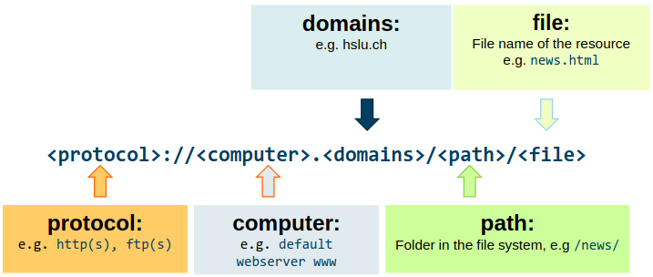

Comuter Science Concepts for Data Science - Notes
Introduction
How can Data Science improve Products & Services?
Data Science improves traditional productio nwith basic function by Digital services using Data Science driven functions. The result is a new poroduct type, for Example watch vs. smart watch. To do so, data has to be processec, visialized, tranferd storaged and used in a program.
Computer Network
Fundaments of Computer Networks
A computer network is build of several components:
- Coneccted devises: Hosts (end stystems).
- Communications linsk: Wired and wireless.
- Protocols: Sending and receiving data.
- Packet switches: routers and switches.
Example Net
Packet Switching
The Host dates applicatins messages and breaks them into smaller chunks (aka. packets) of length \(L\) bits. The packets are transmitted into access network at rate \(R\), called link capacity/bandwith.
Packaet Transmission Delay
- \(L\): Packet lenght (bits).
- \(R\): Link bandwith (dps).
\[ d_{\text{trans}} = \dfrac{L \quad \text{(bits)}}{R \quad \text{(bits/sec)}} \]
Propagation delay
- \(d\): Length of physical link.
- \(s\): Propagation speed in medium.
\[ d_{\text{prop}} = \dfrac{d}{s} \]
Rate
Rate (bits/time unit) at which bits transferred between sender/receiver. We disquinsh between:
- Instantaneous: Rate at given point in time.
- Average: Rate over longer period of time.
Protocol Layers
Protocols define format, order of msgs sent and received among network entities, and actions taken on msg transmission, receipt.
- Applications: FTP, SMTP, HTTP.
- Transport: TCP, UDP.
- Network: IP, routing protocols.
- Link: Ethernet, WiFi.
- Physical: Ethernet, WiFi.
Addressing in Computer Networks
Domain Name System
Translates domain names to numerical IP addresses.
- DNS Recursor (Client Side): Initiates the query. It’s the first stop and acts as a librarian trying to find the IP address.
- Root Nameserver (The Dot ‘.’): The starting point. It directs the Recursor to the correct Top-Level Domain (TLD) Nameserver.
- TLD Nameserver (e.g., .com, .de, .org): Manages all domains under its specific extension. It points the Recursor to the Authoritative Nameserver for the specific domain requested.
- Authoritative Nameserver: Holds the definitive DNS records (A, CNAME, MX, etc.) for the requested domain. It provides the actual IP address back to the Recursor.
- DNS Recursor / Client: Receives the IP address and finally connects to the web server to load the website.
IP Addressing
Each device is assigned a unique IP address build up by Net ID + Host ID
Switch
A network switch is a central component in almost every wired network, especially in local area networks (LANs). It acts as an intelligent distribution station for data traffic. Based on incoming frames switch “learns” location of sender. Records sender/location pair in switch table.
Note: Layer 2 – Data Link Layer
Router
A router is a network device that forwards data packets between different networks. It ensures that information (e.g. a website, video or email) reaches the recipient from the sender – even if it has to pass through many intermediate stations.
Note: Layer 3 – Network Layer
Week 3: Case Study – Web Applications & HTML
Client Server Communication Pattern
Clients (e.g. Browser) send service requests. Servers (e.g. Web, Database) wait for requests to arrive from clients and then respond to. Client receive service responses from centralized server.
Uniform Resource Locator (URL)
Reference to a web resource that specifies its location in a computer network (e.g. web page, video, image, etc.)

HTML
Descriptive Language HTML, with a set of HTML elements/tags, is used to create Websites and publish content on the Internet in a simple and standardized way. The Hypertext Transfer Protocol (HTTP) ensures that content on a Web server can be accessed and interpreted by a Web client and thus displayed within a browser.
CSS
CSS is a stylesheet language that is primarily used to describe the appearance and formatting of a document written in a markup language such as HTML.
Week 4: Algorithms & Programming Language Concepts
Algorithms
A computational problem specifies an input-output relationship. An algorithm is an exact specification of how to solve a computational problem. Algorithms must be: - Correct: For each input produce an appropriate output - Efficient: Run as quickly as possible, and use as little memory as possible
Designing Algorithms
Break problem up into smaller (easier) sub-problems. Think only about how to use the smaller solution to get the larger one Do not worry about how to solve to smaller problem (it will be solved using an even smaller one).
Recursion
Recursion is a method of solving a problem where the solution depends on solutions to smaller instances of the same problem. This allows programming in a style that reflects divide-n-conquer algorithmic thinking.
Search Algorithms
Linear search or sequential search is a simple method for finding an element within a sorted list. It sequentially checks each element of the list until a match is found or the whole list has been searched. A linear search runs in at worst linear time and makes at most \(n\) comparisons.
Binary Search
Binary search is a search algorithm that finds the position of a target value within a sorted list of values. Binary search compares the target value to the middle element of the list. If they are not equal, the half in which the target cannot lie is eliminated and the search continues on the remaining half, again taking the middle element to compare to the target value, and repeating this until the target value is found.
Week 5:Algorithms & Programming Language Concepts
Low Code Environments
Combines visual program elements like variables, loops or conditional statements rather than specifying them textually.